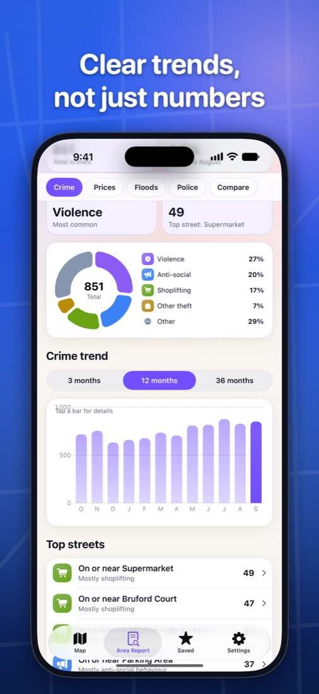
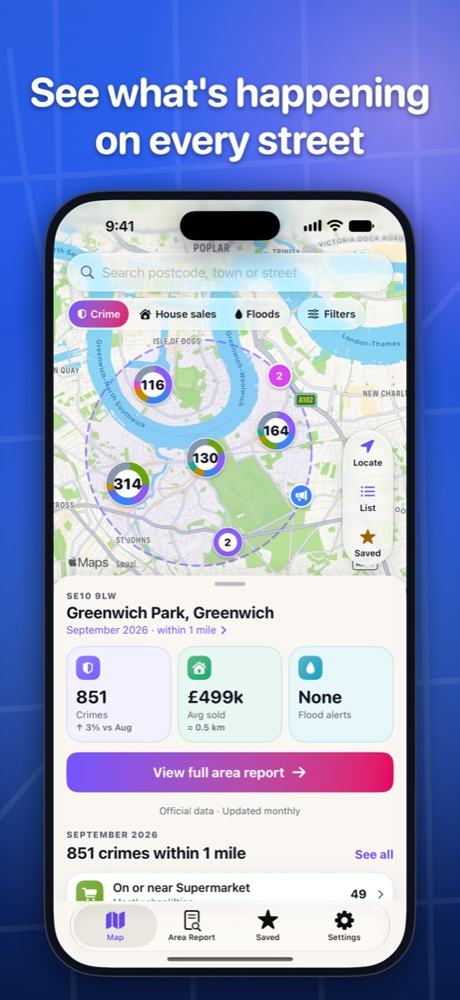
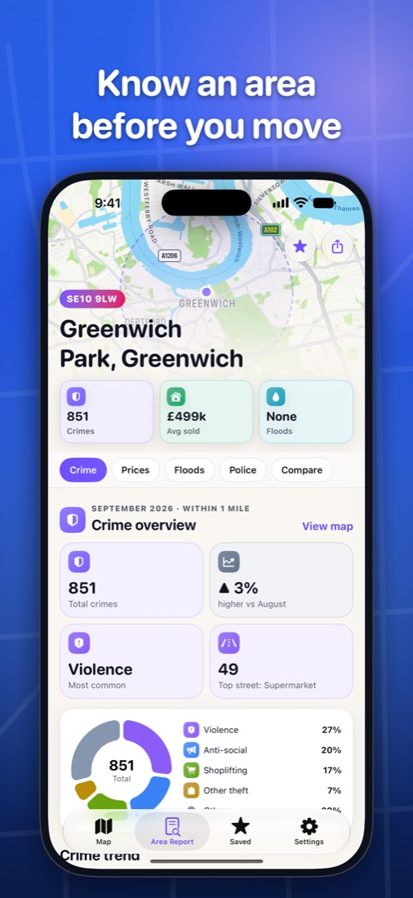
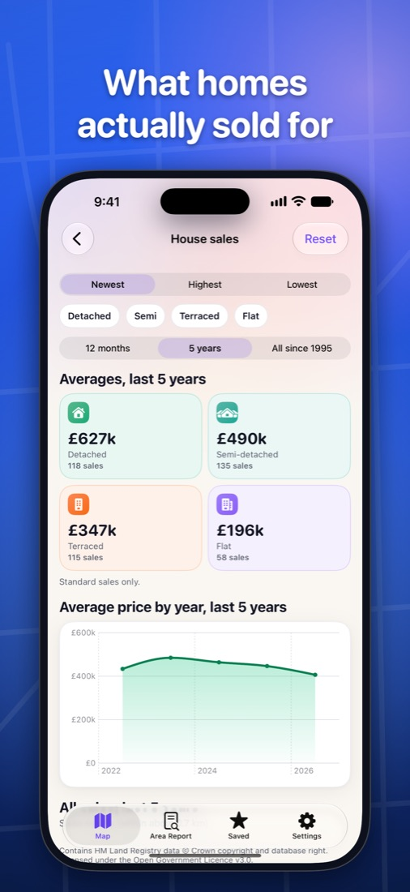
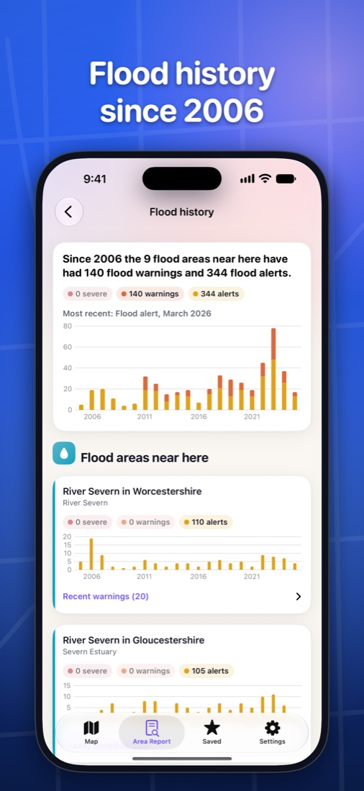
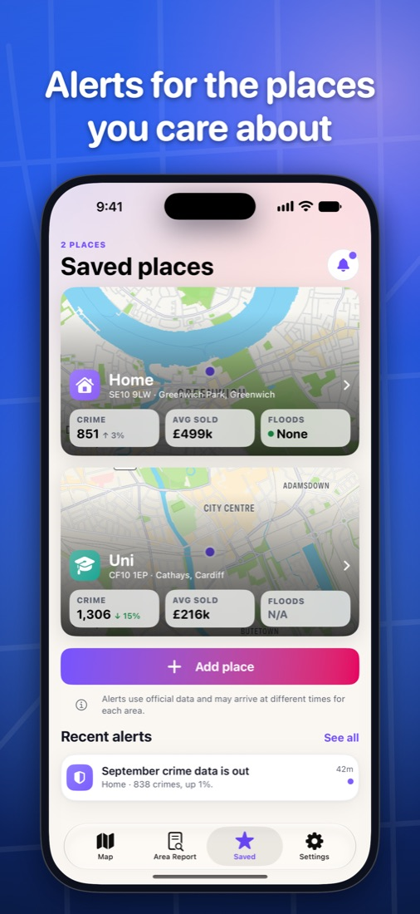
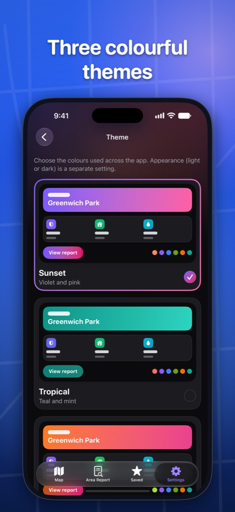

Crime on every street
Monthly street-level crime from the police within 1 mile, by category and street, with trends over 3, 12 or 36 months. Locations are approximate to protect privacy.
Crime, house prices & floods
Check postcodes and places across England and Wales, with crime data for Northern Ireland too – before you move, rent, buy or visit. Official open data, shown clearly and calmly.

Street Crime Map UK brings together official data from the police, HM Land Registry and the Environment Agency, so you can see what's happening in an area at a glance.

Monthly street-level crime from the police within 1 mile, by category and street, with trends over 3, 12 or 36 months. Locations are approximate to protect privacy.

Crime, sold house prices, flood warnings and local policing for an area, in one calm summary.

Official HM Land Registry sold prices, not asking prices: recent sales nearby, averages by property type and price trends going back to 1995.

Live Environment Agency flood alerts and warnings in England, plus the history of warnings issued nearby since 2006 and where land has flooded before.

Save your home, work or family's area and get a notification when new monthly crime data, flood warnings or house sales arrive.

Sunset, Tropical or Citrus, each in light and dark mode – with a matching app icon if you like.
The app is free to download. Street Crime Map Pro unlocks more history and extra features, as a subscription or a one-time purchase in the app.
All data is official open data. It can be delayed, incomplete or approximate, and the app is not for emergencies – in an emergency always call 999.
Street-level crime, outcomes and local policing from data.police.uk. England, Wales and Northern Ireland; usually 1–2 months behind.
Price Paid Data: sold prices in England and Wales since 1995, updated monthly.
Live flood warnings and alerts, historic flood warnings and recorded flood outlines for England.
Postcode lookup and search, based on Office for National Statistics data.
Coverage: crime – England, Wales & Northern Ireland; house prices – England & Wales; flood warnings and history – England.
Contains public sector information licensed under the Open Government Licence v3.0. Contains HM Land Registry data © Crown copyright and database right, licensed under the Open Government Licence v3.0. This uses Environment Agency flood and river level data from the real-time data API (Beta). Contains Environment Agency information © Environment Agency and/or database right, licensed under the Open Government Licence v3.0.